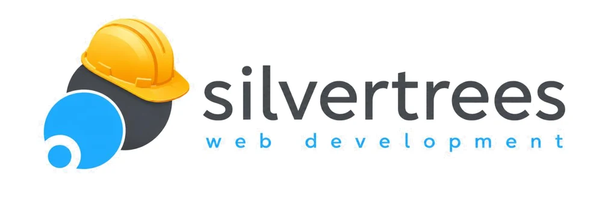

identity · 2026
small
beginnings.
A visual identity for Silvertrees, built so that if the logo came off the page you would still know whose page it is.
01 · the idea
from small beginnings, super heroes grow.
That line has sat on silvertrees.net for years. The logo already draws it: two discs, each carrying a small seed on its rim. We kept the logo exactly as it is and read it as a system.
02 · six fingerprints
recognisable without the logo.
Each one is lifted straight from the mark. Any two of them on a page are enough to say “Silvertrees”.
seed and disc
A ring means starting, a dot in its moat means launched. Bullets, statuses, links and the menu button all speak it.
the moat
Where two shapes meet there is always a white gap, never an overlap. It is what makes the logo feel clean, so the whole site inherits it.
the notch
Panels and screenshots carry a seed bitten into one corner: graphite at the top, sky at the bottom, as in the mark.
web development
tracked lowercase
The logo's second line, widely spaced and lowercase, becomes every label. Headlines go lowercase like the wordmark.
growth rings
Silver trees, read in section: thin silver rings spread from the discs, never evenly, like a trunk. They replace gradients and texture.
hard hat yellow
From the “under construction” version of the logo. One meaning only: start building. The CTA, the enquiry slab, the 404.
03 · colour
two logo colours, one rule each.
Graphite and sky are sampled from the logo file. Everything else is silver, ink or the hat. Contrast is measured, not guessed.
graphite
the business. Big disc, wordmark, body on dark grey.
8.6:1 on white
sky
the web. Blue disc, seeds, links, focus. Fills and shapes only.
2.7:1 · shapes only
sky type
the logo blue nudged for large headlines.
3.1:1 · large type
sky ink
blue for small text and labels.
5.4:1 on white
ink
text. Warm, never pure black.
15.9:1 on white
hat
the hard hat. Only for “start building”.
9.2:1 with ink
mist
silver as a surface: alternate bands.
panel
silver
silver as a line: rings, borders.
lines only
night
dark bands and the footer.
16.6:1 with white
04 · type
figtree. silver, trees, figs.
A friendly geometric sans with the open, round counters of the wordmark. One family, set three ways, plus a mono for numbers.
display · 700 · lowercase · −0.045em
making online business simpler.
label · 600 · 12.5px · +0.34em
web development · sydney
text · 400 · 17/1.6
We create systems that talk to the public, and also save time and automate office processes, in a way that is easily understood and operated.
numbers · JetBrains Mono
+61 2 9063 8994
05 · the mark
kept, tightened.
The same mark, redrawn as clean geometry so it scales from a favicon to a building wrap. Discs on a 45° diagonal, seeds sitting on the rims, a moat around everything that touches.


construction
Graphite disc r 80, sky disc r 66, seeds r 17 and 15, moats 8 units. Centres share one diagonal.
clear space
One seed diameter on every side. Nothing enters the moat.
smallest size
Mark 20 px. Lockup 120 px wide; below that, drop the “web development” line.
never
Recolour the discs, fill the moat, rotate the diagonal, or add the hat to the everyday logo.

06 · the hat
the hat means we're building.
Silvertrees already had a hard-hat version of the logo. Instead of a second logo, it became a colour with one job: every “start a project” is hat yellow, the enquiry slab is hat yellow, and a missing page is “under construction”.
07 · motion
things grow, they don't slide.
One verb for all motion: a seed grows into a disc. Springy, short, and switched off for anyone who asks their device for less motion.
buttons
The seed inside the button grows until it fills it.
loader
First visit only: the sky seed, the sky disc, the graphite disc, then its seed. 1.7 seconds.
process
The five steps of a project are drawn as one seed growing.
08 · in use
off the screen, still them.
+61 2 9063 8994
gerard@silvertrees.net
making online business simpler
Gerard
Silvertrees Web Development
+61 2 9063 8994 · silvertrees.net
web development
social avatar · favicon
09 · the site
every page, built.
21 case studies and 8 product pages from the real material on silvertrees.net, plus hosting, about, news, contact and a 404.
- Home
- Work, filtered by sector
- Sold Expo
- PSYCHmatters
- Brydens Compensation Lawyers
- MyFlowerMarket
- Global Knives
- Capstar
- Trade Publishing
- Online Curtains
- Classic Building
- SESMO
- Portfolio & Reel
- Doors Plus
- ViewMag
- Penthouse on Bright Point
- MWT Foods
- JaysPJs
- Hardware & Glass
- Scanpan
- Nepean Motor Group
- BHF Couriers
- Di Lorenzo
- Products
- Online Expos
- Online Newsletters
- The Organiser
- Help Desk
- Surveys in Seconds
- FileXchange
- Online Doc Store
- e-therapy
- Hosting
- About
- News (3 stories)
- Contact
- 404